Le champ de bataille
Les adversaires s’affrontent sur des cartes lieux. Chaque joueur possède toujours un lieu QG et deux lieux non-QG.
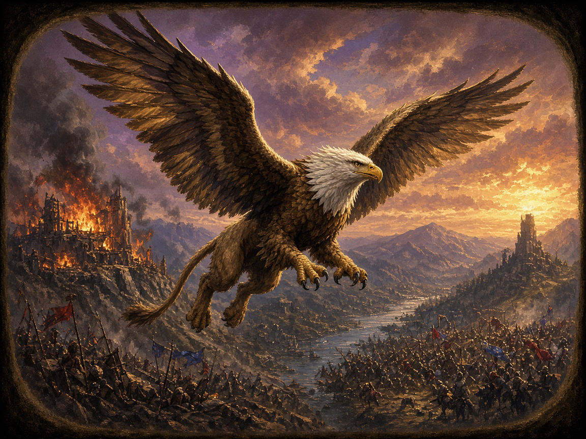
Jeu de confrontation · 2 joueurs
Conquérez la citadelle adverse. Épuisez son deck. Que la gloire soit pixelisée.
Chapitre I
Pixel of Glory est un jeu de confrontation à deux. Chaque joueur mène des unités, des bâtiments et des équipements pour frapper les lieux de l’adversaire — jusqu’à épuiser son deck.
Vous gagnez dès que le deck de jeu de l’adversaire n’a plus aucune carte. Si les deux decks s’épuisent en même temps, des départages s’appliquent (voir Victoire).
Les adversaires s’affrontent sur des cartes lieux. Chaque joueur possède toujours un lieu QG et deux lieux non-QG.
Depuis votre main, vous jouez des unités, des bâtiments, des équipements et des événements. Vous attaquez les lieux adverses tout en défendant les vôtres.
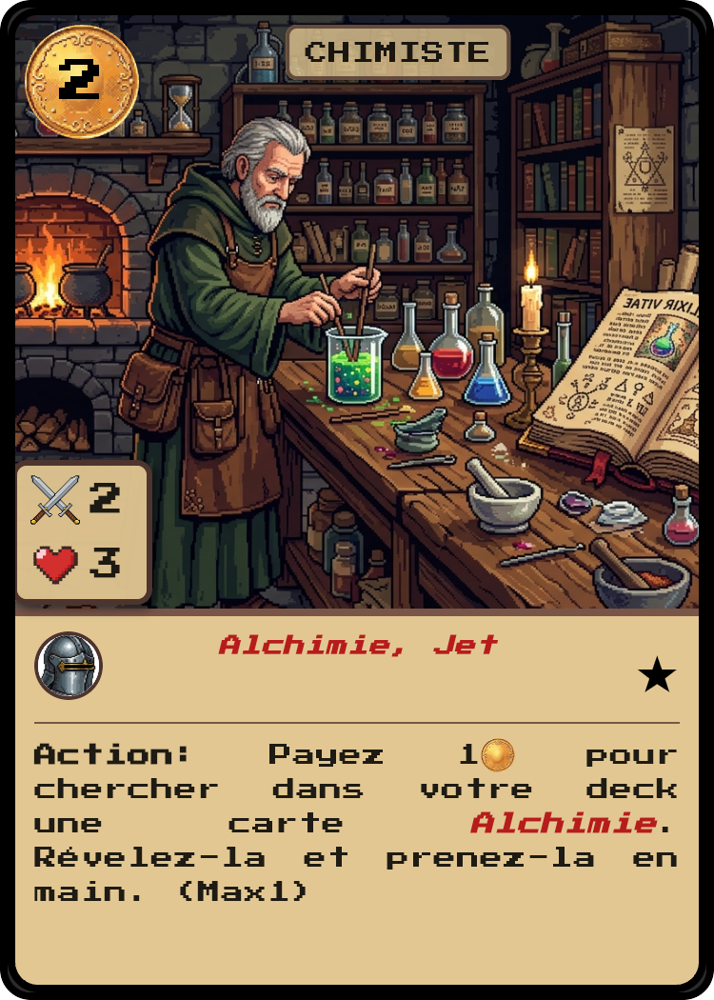
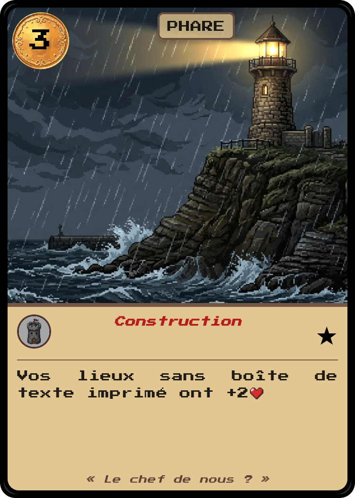
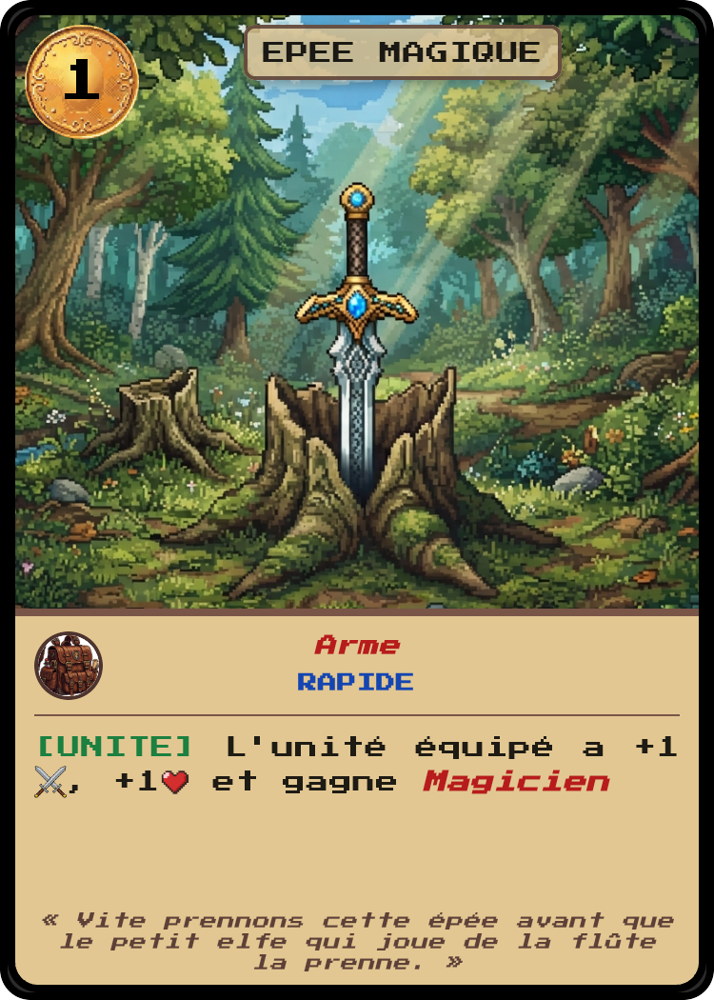
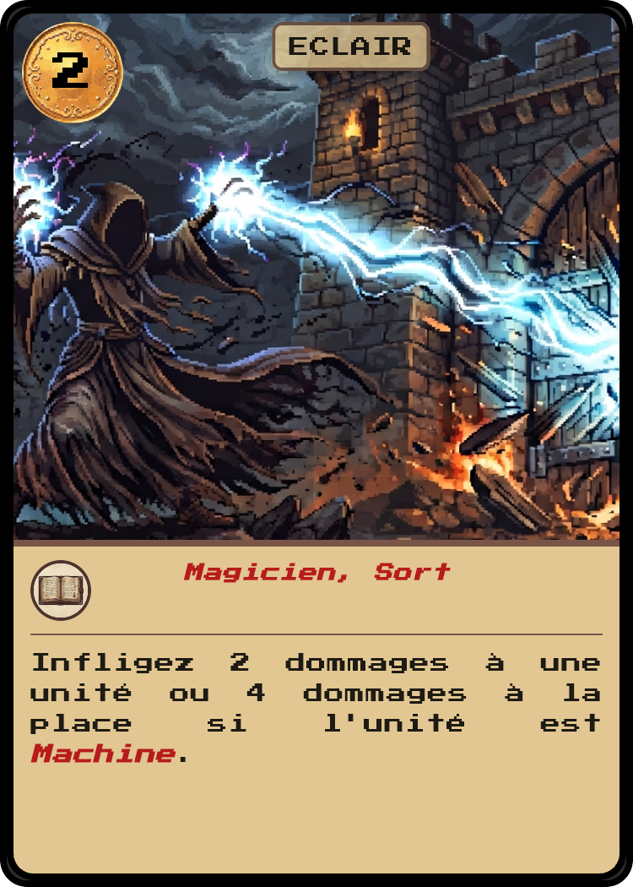
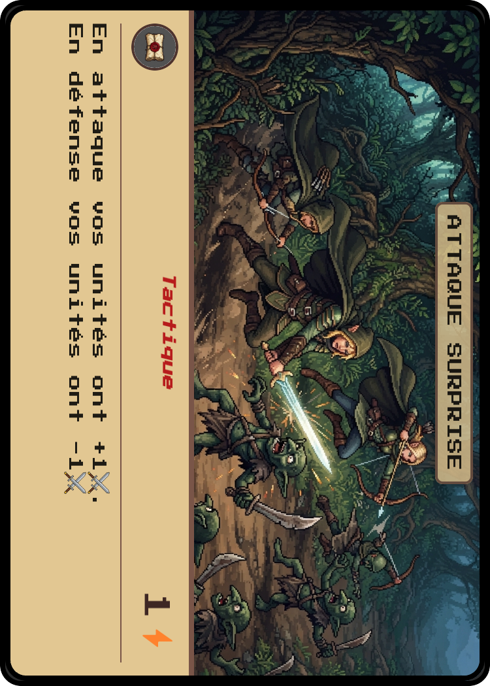
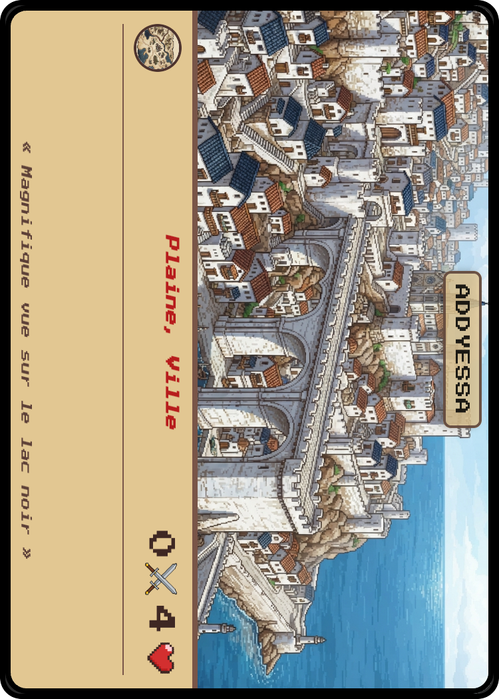
Vocabulaire
Votre pioche : un paquet de 40 cartes que vous avez assemblé (unités, bâtiments, équipements, événements).
Paquet séparé, de 7 plans différents. Un plan est révélé chaque tour. Les plans révélés restent visibles et consultables. Les plans déjà utilisés forment une pile face visible.
Événements joués, unités tuées ou défaussées, bâtiments et équipements détruits ou défaussés. La pile est consultable à tout moment par les deux joueurs.
Indique qui a l’initiative ce tour. Ce joueur choisit l’ordre des effets simultanés et a la priorité d’action.
Là où les unités et les bâtiments sont joués. Sauf indication contraire, un effet qui fait entrer une unité ou un bâtiment en jeu le place dans la citadelle.
Résoudre les effets passifs y relatifs (ordre choisi par le joueur avec l’initiative). L’acronyme évite de répéter cette phrase partout dans les règles.
Après presque chaque action, on résout les effets passifs concernés. C’est toujours le joueur qui a le jeton initiative qui décide de l’ordre si plusieurs effets se déclenchent en même temps.
Chapitre II
Au début de partie, un joueur peut mettre de côté au maximum 4 cartes de sa main de départ, piocher autant de cartes, puis mélanger les cartes mises de côté dans son deck.
Le plan révélé et la pile des plans utilisés restent consultables. Le deck de plans non utilisés est secret : seul son propriétaire peut le consulter.
Chapitre III
Chaque tour suit toujours le même rythme. Cliquez une phase pour aller au détail.
Le joueur avec le jeton initiative choisit l’ordre des effets passifs de début de phase, puis ceux de fin de phase. C’est vrai pour les cinq phases.
On révèle un plan, on donne l’initiative, on résout les effets « À l’instant :… ».

Le joueur au jeton décide aussi de l’ordre si plusieurs effets passifs doivent se résoudre en même temps.
On construit. On équipe. On prépare la citadelle.
Le joueur avec le jeton a la priorité pour la première action. Les joueurs jouent chacun leur tour. Pendant cette phase, un joueur peut jouer un maximum de quatre cartes non-RAPIDE depuis sa main. Les cartes RAPIDE ne comptent pas dans cette limite.
On envoie les troupes : attaque sur les lieux adverses, défense sur les siens.

Les joueurs jouent chacun leur tour (priorité au joueur avec l’initiative).
Une unité qui ne peut pas attaquer ou ne peut pas être en attaque ne peut pas être assignée en attaque. Une unité qui ne peut pas défendre ou ne peut pas être en défense ne peut pas être assignée en défense.
On choisit un lieu, on joue des actions, puis on calcule les dommages.
Il y a combat si une unité est présente au début de la phase dans un lieu — qu’elle soit en défense ou en attaque. On ne peut pas créer un combat en faisant apparaître une unité dans un lieu vide au début de la phase.
Le joueur au jeton choisit l’ordre des combats. Tous les combats doivent être traités, y compris les lieux « sans résolution ».
Le joueur au jeton choisit un combat. Avant la résolution, les joueurs peuvent (priorité à l’initiative) :
On compte la force de chaque camp : valeur de force des unités (plus ou moins modificateurs), équipements, lieux, et événements qui ajoutent de la force au total final.
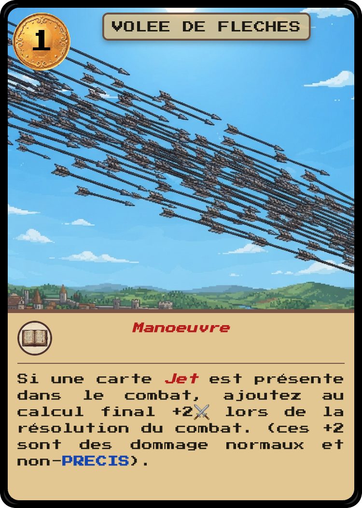
Exemple
La carte « Volée de flèches » ajoute +2 FOR au calcul final de la résolution du combat (dommages normaux, non-PRECIS), si une carte Jet est présente dans le combat.
On sépare la force des cartes Magicien, POISON et MORTEL des autres cartes.
Seuls ces dommages affectent les cartes ETHERE.
Chaque dommage POISON inflige 1 dommage supplémentaire à l’unité survivante, juste avant son retour à la citadelle.
Tue l’unité survivante après le combat, juste avant son retour à la citadelle.
Les unités PUGNACE ne sont tuées qu’à la fin de la phase de combat.
Après distribution aux unités en défense en priorité, le surplus va au deck adverse (1 carte du dessus par point). Le joueur qui inflige bénéficie d’un bonus de ravage.
Après les unités, le surplus va à la main (défausse au hasard), puis au deck s’il n’y a plus assez de cartes en main. Bonus de ravage également (peut aussi cibler la main).
Le bonus de ravage s’utilise après la distribution des dommages aux unités / lieu / deck-main, et avant POISON, MORTEL et le retour à la citadelle.
Lorsqu’un lieu est ravagé pour la première fois pendant le déroulement ou la résolution du combat, l’attaquant gagne un bonus de ravage. L’intensité dépend du nombre de lieux déjà ravagés chez l’adversaire (voir tableau). Si le lieu vient d’être ravagé par la résolution, les dommages restants non distribués sont ignorés.
Si un lieu est détruit hors combat (ni pendant le déroulement ni pendant le calcul), il n’y a pas de bonus de ravage.
Il n’y a jamais de bonus de ravage pendant la phase de dette.
Les cartes défaussées sont toujours contrôlées par l’adversaire. Si le lieu attaqué est un QG, on peut prendre des cartes de la main à la place du deck (puis le deck s’il n’en reste pas assez en main).
Choisissez l’une des options :
Choisissez l’une des options :
Choisissez l’une des options :
Le bonus vaut 2 cartes, ou 1 bâtiment, ou 1 équipement, plus 1 carte ou 1 bâtiment ou 1 équipement par autre lieu déjà ravagé.
Quand tous les combats sont résolus, fin de phase : les PUGNACE qui ont autant de dommages que de PV (ou plus, ou 0 PV) sont tuées et vont à la défausse.
Qui n’a pas l’OR paie. Puis on défausse et on pioche jusqu’à 7.

Actions possibles, chacun son tour (priorité à l’initiative) : habilité « Action :… », événement, carte depuis la défausse si autorisé, défausser une carte pour retirer ETHERE, ou passer. Deux passes consécutives → résolution de la dette.
Le joueur qui n’a pas le pion OR de son côté est endetté. Les dommages de dette égalent le montant de l’échelle en faveur de l’adversaire. Distribution : unités → lieux → deck. Il est obligatoire de toucher tous les lieux avant le deck. 1 dommage au deck = 1 carte du dessus à la défausse. Pas de bonus de ravage ici.
Le joueur qui a l’OR déduit 3 au total. S’il reste un positif, c’est lui qui inflige ce reste à l’adversaire. Ensuite, l’endetté distribue lui-même les 3 dommages restants (unités → lieux → deck).
L’endetté inflige lui-même tous ces dommages à ses unités, puis ses lieux, puis son deck.
Après la résolution, l’échelle de l’OR est remise à zéro.
Économie
Le pion peut être sur zéro (neutre) ou d’un côté ou de l’autre. S’il est de votre côté, vous avez de l’OR ; l’autre joueur est endetté.
Joueur A ← neutre → Joueur B · le pion ne dépasse jamais 6
Déplacer le pion vers l’adversaire d’autant de cases que le coût.
Le pion ne peut pas dépasser la case 6. L’excédent devient des dommages infligés à celui qui fait dépasser. La carte qui provoque le dépassement est entièrement résolue avant ces dommages.
Exemple — payer
Un joueur paye 5 OR pour mettre son unité en jeu et le pion OR est sur la case 2 en sa faveur. Il doit déplacer le pion OR en direction de son adversaire de 5 cases (le pion OR finit sur la case 3 en faveur de son adversaire).
Exemple — plafond 6
Si le pion est sur la case 5 en faveur du joueur A et que le joueur B joue une carte coûtant 3 OR, comme il n’est pas possible de dépasser 6 sur l’échelle de l’OR, le joueur A inflige 2 dommages au joueur B (5+3 = 8, 2 OR de plus que la case 6, donc 2 dommages sont infligés).
Le pion recule vers zéro de votre côté. Il ne passe pas chez l’adversaire. Exemple : le joueur B a le pion OR sur la case 2 de son côté ; s’il perd 3 OR, le pion OR est mis sur le zéro, il ne passe pas du côté du joueur A sur 1.
Le pion avance vers vous (il peut passer en votre faveur). Il ne va jamais au-delà de 6.
Anatomie
Coût en OR, force, points de vie, boîte de texte (traits, mots-clés, capacités). Jouées dans votre citadelle, déplaçables vers des lieux. Certains effets les font arriver directement dans un lieu.
On place des jetons de dommages sur la carte. Autant de dommages que de PV actuels → l’unité est tuée. En principe on ne dépasse pas les PV. Si à la fin d’un tour une unité encore en jeu a plus de dommages que de PV, on retire le surplus pour égaliser.
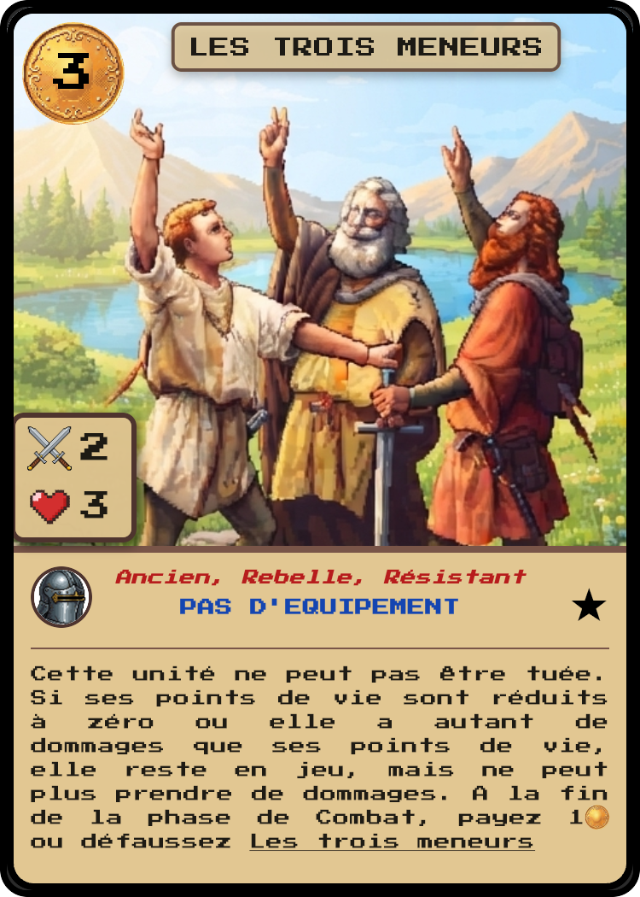
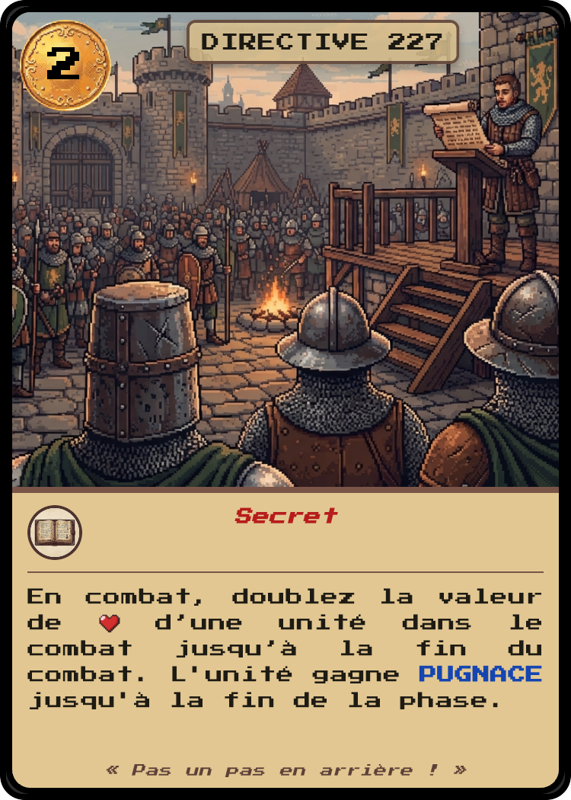
Exemple
Par exemple dans le cas où l’unité « Les trois meneurs » (qui ne peut pas être tuée) aurait eu ses points de vie temporairement augmentés grâce à la carte « Directive 227 » (qui double les points de vie d’une unité jusqu’à la fin du combat), et que cette unité avait subi des dommages durant un combat qui dépassent ses points de vie imprimés, elle se retrouverait effectivement avec plus de points de dommages que ses points de vie à la fin du tour. Il faut alors retirer le surplus.
Coût en OR, traits et capacités. Joués ou entrent en jeu dans la citadelle du propriétaire.
Coût en OR, traits et capacités. Se jouent sur une unité, un bâtiment ou un lieu non ravagé. La boîte de texte dit où c’est légal :
Par défaut : un seul équipement par carte. Si la carte équipée quitte le jeu, l’équipement revient en main — ou à la défausse s’il est FRAGILE.
Si l’état du jeu rend un équipement illégal, on revient immédiatement à une situation légale. Le contrôleur de la carte dont l’état a changé décide comment.
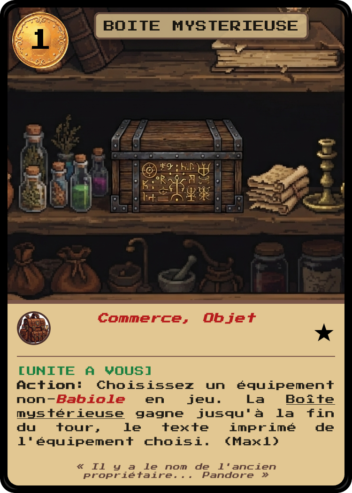
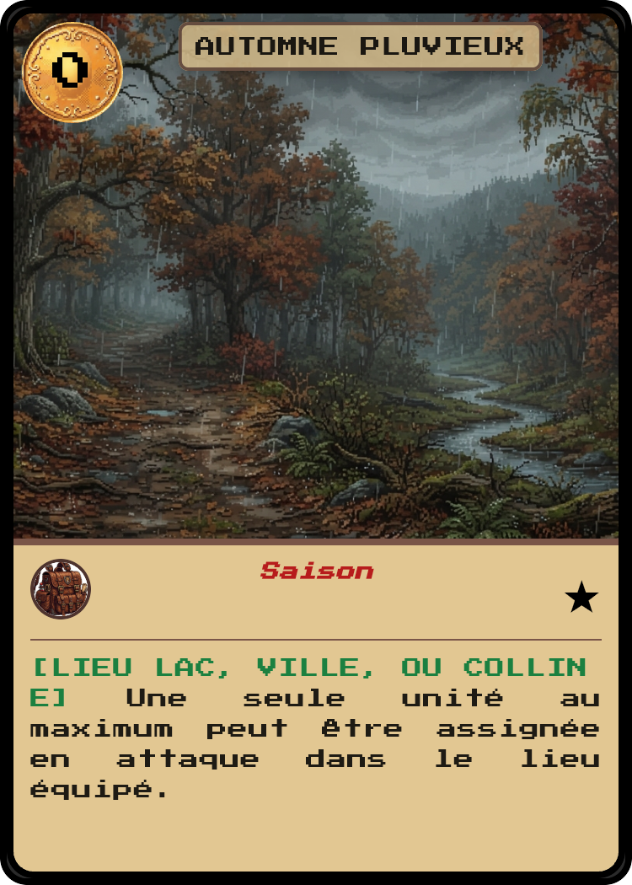
Exemple
La carte « Boîte mystérieuse » est sur une unité et l’action sur la Boîte mystérieuse est utilisée pour gagner le texte d’un équipement qui doit être mis sur un lieu, alors les conditions ne sont plus légales entre l’unité et l’équipement (par exemple : prendre le texte de « Automne pluvieux »). À cet instant, la Boîte mystérieuse doit être reprise en main par son propriétaire.
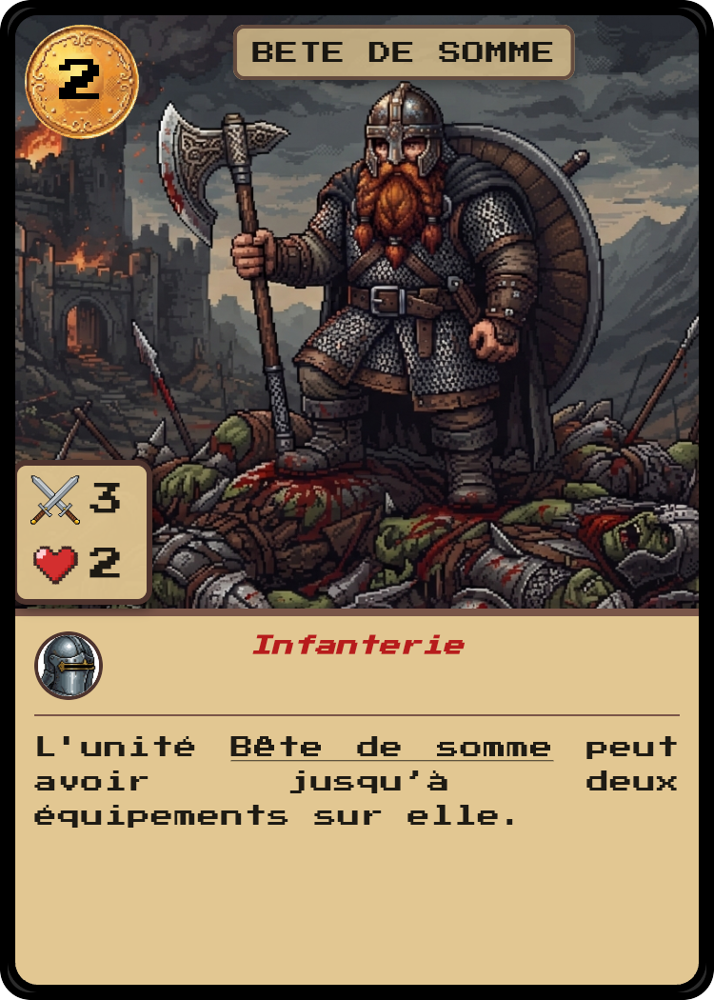
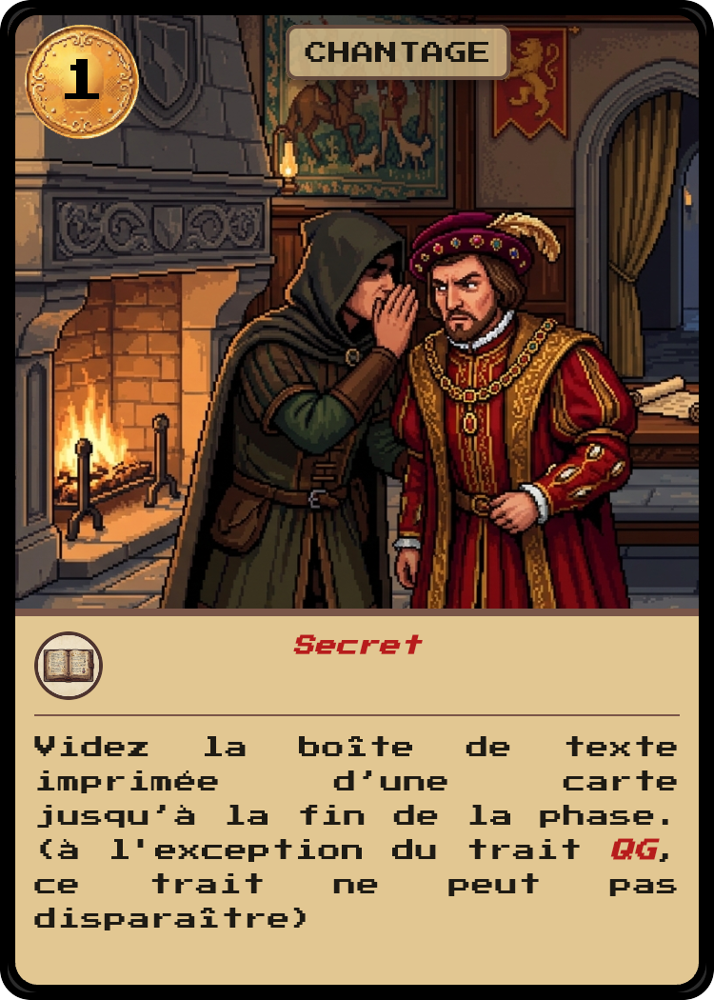
Exemple 1
L’unité « Bête de somme » selon son texte peut avoir deux équipements sur elle, alors que normalement il est possible d’en avoir qu’un seul par carte. Si la Bête de somme devient la cible de l’événement « Chantage » (la boîte de texte imprimée de l’unité ciblée est vidée), comme la boîte de texte de l’unité « Bête de somme » est vidée, il n’est plus autorisé d’avoir plus d’un équipement sur l’unité. Vu la perte de son texte imprimé permettant deux équipements, le contrôleur de l’unité décide quel équipement reste sur son unité. Le contrôleur de la « Bête de somme » doit immédiatement défausser un des deux équipements qu’elle a sur elle pour revenir à une situation normale.
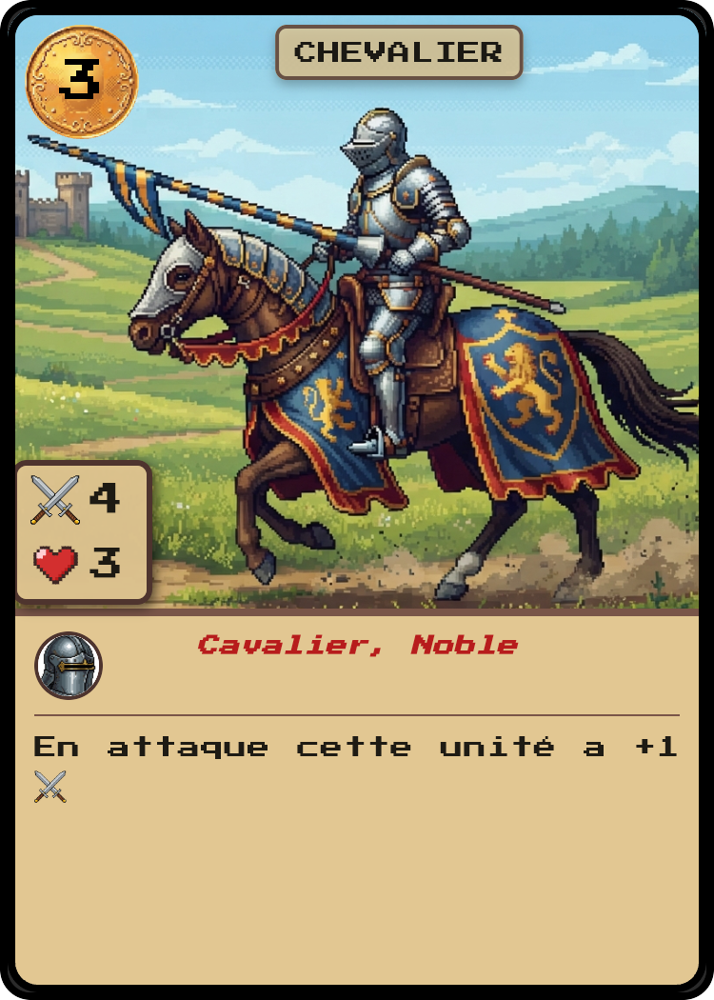
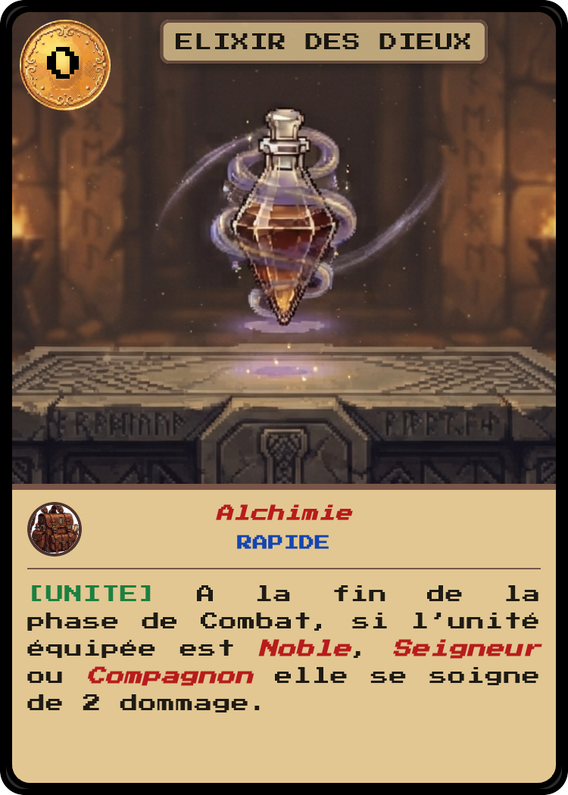
Exemple 2
Si un équipement est équipable uniquement sur une unité Noble et qu’à un moment du jeu, cette unité perde le trait Noble, à ce moment-là, l’équipement doit quitter le jeu. S’il est FRAGILE, il va dans la pile de défausse, sinon il remonte en main de son propriétaire.
Exemple 3
Si un bâtiment a un équipement sur lui et que ce bâtiment gagne le mot-clé PAS D'EQUIPEMENT, alors il faut récupérer la carte équipement en main. Si l’équipement est FRAGILE, il va dans la pile de défausse de son propriétaire.
Coût en OR, traits et capacités. Joués, résolus immédiatement, puis défausse du propriétaire.
Révélés en début de tour. Effet unique ou permanent pour le tour, plus une valeur d’initiative.
Mis en place en début de partie. Autant de dommages que de PV → on résout les effets passifs déclenchés, puis on retourne le lieu sur sa face ravagé. S’il n’a pas de dommages mais que ses PV tombent à 0, il est aussi ravagé. Face ravagée : plus de PV, plus d’habilités, il ne garde que ses traits, pas d’équipement.
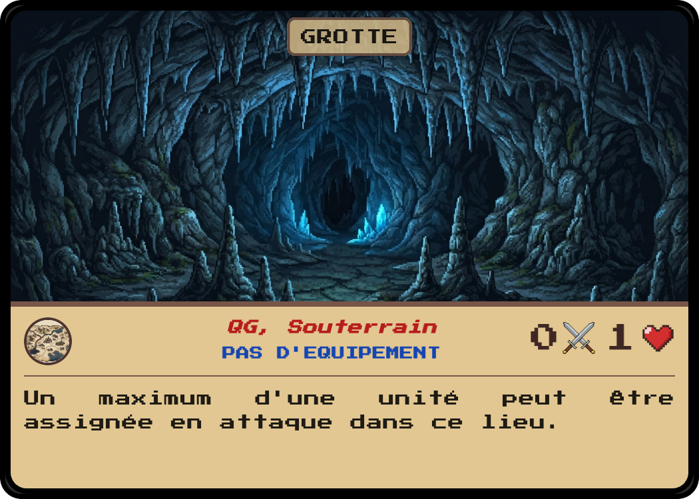
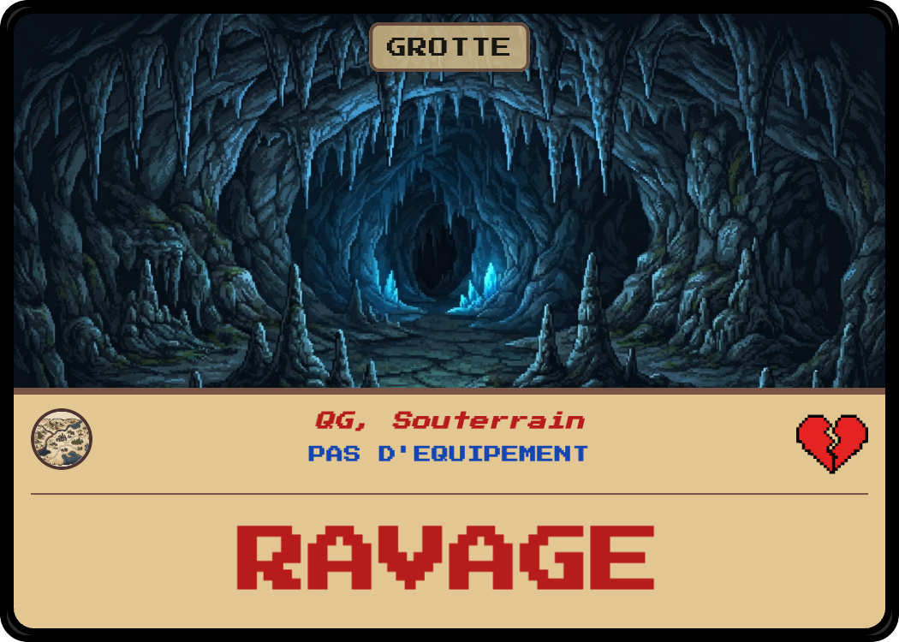
Un joueur ne peut contrôler qu’un exemplaire du même nom. Si un effet devait lui en donner un second, cette dernière carte va immédiatement à la défausse de son propriétaire. En cas de boucle infinie, elle est mise hors de la partie à la place.
Vous payez le coût indiqué (même procédure OR que pour jouer une carte) et vous faites ce que le texte dit. (Max2) = au plus 2 fois par tour, etc.
Exemple
La carte « Chimiste » a le texte : « Action : payez 1 OR pour cherchez une carte Alchimie dans votre deck. Révélez-la et prenez-la en main (Max2) ». Cela veut dire que vous pouvez payer 1 OR et vous cherchez dans votre deck de jeu une carte avec le trait Alchimie, la montrer à votre adversaire et la prendre en main. Vous devez mélanger votre deck et votre action est terminée. La mention (Max2) indique que cet effet est faisable 2 fois par tour.
Précisions
Jouer une carte signifie jouer une carte depuis sa main. Quand vous jouez une carte, il faut en payer son coût. Cela se fait en poussant le pion OR sur l’échelle de l’OR en direction de l’adversaire du même montant que le coût de la carte jouée. Quand vous jouez une carte, vous en êtes le propriétaire ainsi que le contrôleur. Il est possible que pendant le cours du jeu, le contrôleur d’une carte change, mais jamais son propriétaire ne peut changer.
Important : jouer une carte de sa main est différent que mettre en jeu une carte de sa main, du deck ou depuis la défausse !
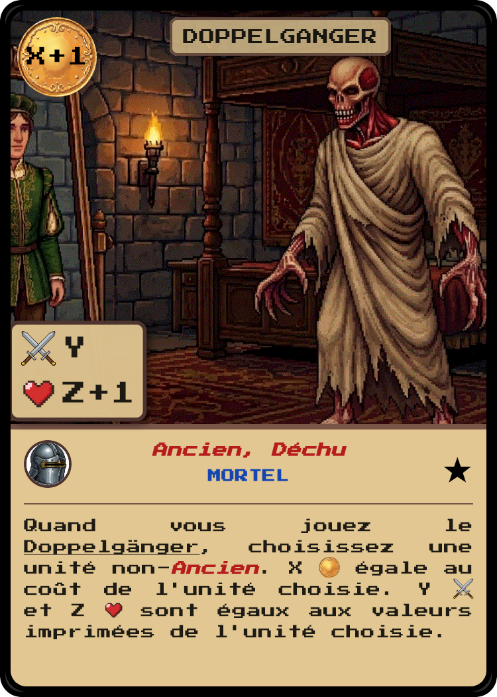
Exemple
La carte « Dopplegänger » a un coût de X+1, une valeur de force de Y et des points de vie Z+1. Quand cette carte a été jouée, le coût pour jouer cette carte a peut-être été de 5 OR, sa force actuelle est peut-être de 3 et ses points de vie de 4. Cependant, son coût imprimé est de 1 (0+1), sa valeur imprimée de force est de zéro et ses points de vie imprimés sont de 1 (0+1).
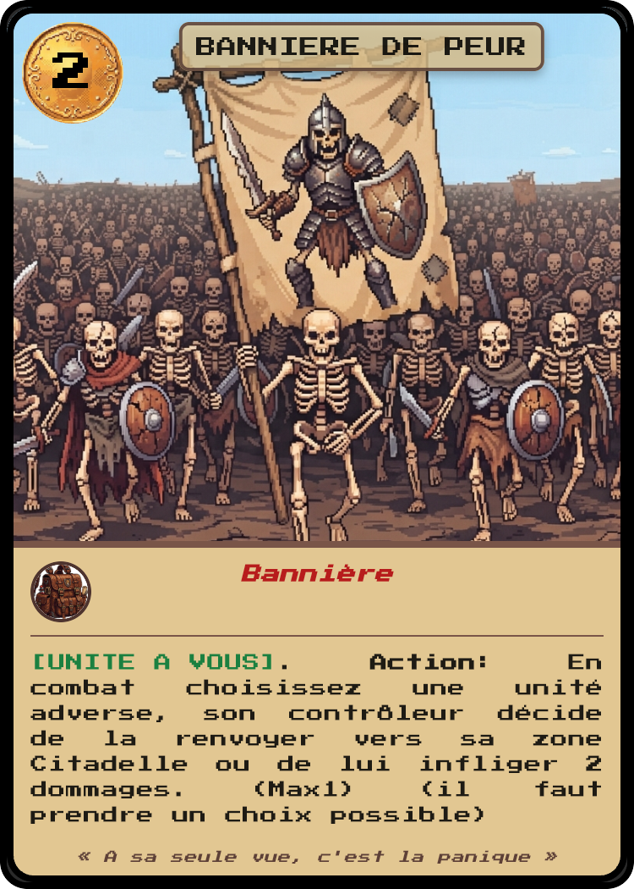
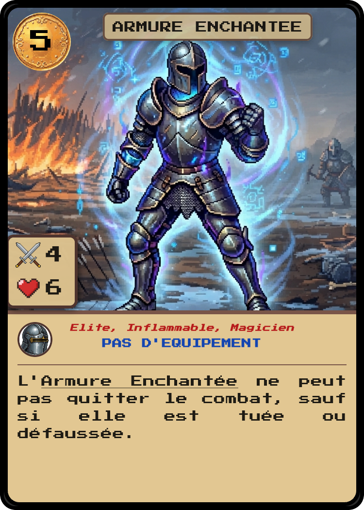
Exemple
L’effet de la « Bannière de peur » qui ciblerait l’unité « Armure enchantée » demanderait au contrôleur de l’« Armure enchantée » de soit quitter le combat, soit subir 2 points de dommages. Comme l’« Armure enchantée » ne peut pas quitter le combat, elle est dans l’obligation de subir 2 points de dommages.
Il en est de même quand un effet n’est réalisable que partiellement : il faut le faire à son maximum. Dans la continuité de l’exemple, si l’« Armure enchantée » n’a plus que 1 point de vie restant, elle subit 1 dommage et est tuée. Même si elle aurait dû subir 2 points de dommages, en subir que 1 est valide et ceci remplit la condition partiellement, mais au mieux possible.
Lexique
Exemple
Un joueur paye 5 OR pour mettre son unité en jeu et le pion OR est sur la case 2 en sa faveur. Il doit déplacer le pion OR en direction de son adversaire de 5 cases (le pion OR finit sur la case 3 en faveur de son adversaire).
Jouer une carte signifie jouer une carte depuis sa main. Quand vous jouez une carte, il faut en payer son coût. Cela se fait en poussant le pion OR sur l’échelle de l’OR en direction de l’adversaire du même montant que le coût de la carte jouée. Quand vous jouez une carte, vous en êtes le propriétaire ainsi que le contrôleur. Il est possible que pendant le cours du jeu, le contrôleur d’une carte change, mais jamais son propriétaire ne peut changer.
Important : jouer une carte de sa main est différent que mettre en jeu une carte de sa main, du deck ou depuis la défausse !
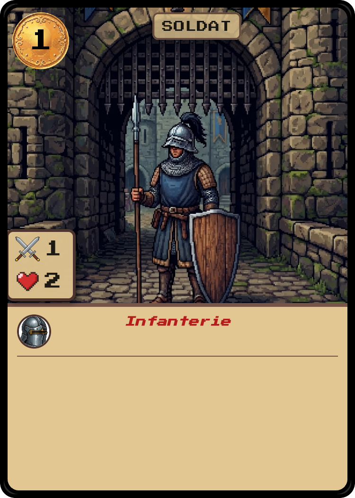
Exemple
Le joueur A place une unité dans sa zone citadelle pendant la phase d’Organisation, il en est le propriétaire et le contrôleur. Il peut arriver que des effets changent le contrôle d’une carte.
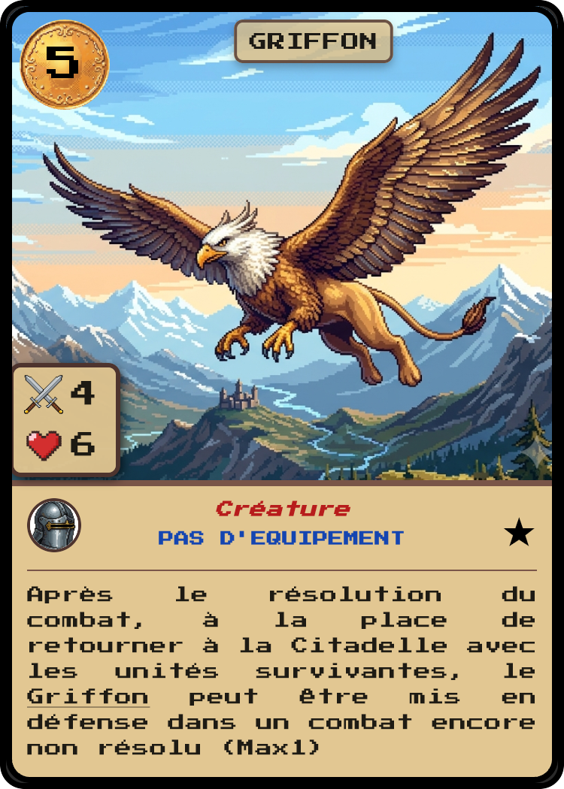
Exemple
Chercher dans votre deck une carte Créature vous oblige à la montrer à votre adversaire puis à mélanger votre deck. Chercher une carte équipement dans votre défausse vous oblige à montrer la carte à votre adversaire, etc.
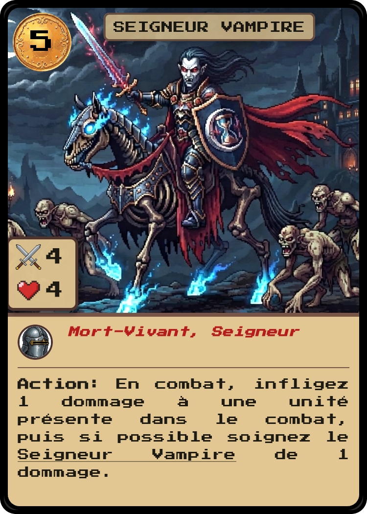
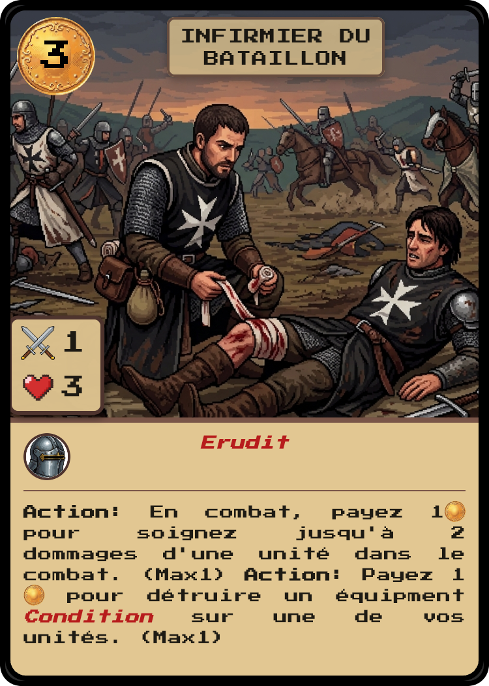
Exemple
La carte « Seigneur vampire » (sans avoir de dommage sur lui) peut, en utilisant son action, infliger 1 dommage à une unité adverse, puis se soigner de 1 dommage.
La carte « Infirmier du Bataillon » ne peut pas utiliser son action de soigner une unité qui n’a pas au moins 1 dommage sur elle.
Exemple
Si une unité possède le texte suivant : « Action : En combat, payez 1 OR pour infliger 1 dommage à une unité adverse dans le combat », cela signifie que pendant le déroulement du combat du lieu en cours, le contrôleur de l’unité peut payer 1 OR et infliger à une unité adverse 1 point de dommage. Il n’est pas possible d’infliger ce point de dommage à une unité adverse qui se trouve dans un autre lieu que celui du combat en cours. Il n’est pas non plus possible d’utiliser la capacité de cette unité si elle se trouve dans un lieu qui n’est pas le combat en cours.
Exemple
La carte « Épée magique » fait gagner à l’unité équipée le trait Magicien et l’unité bénéficie d’une augmentation de +1 de force.
Exemple
Le joueur B a le pion OR sur la case 2 de son côté de l’échelle de l’OR ; s’il perd 3 OR, le pion OR est mis sur le zéro, il ne passe pas du côté du joueur A sur 1.
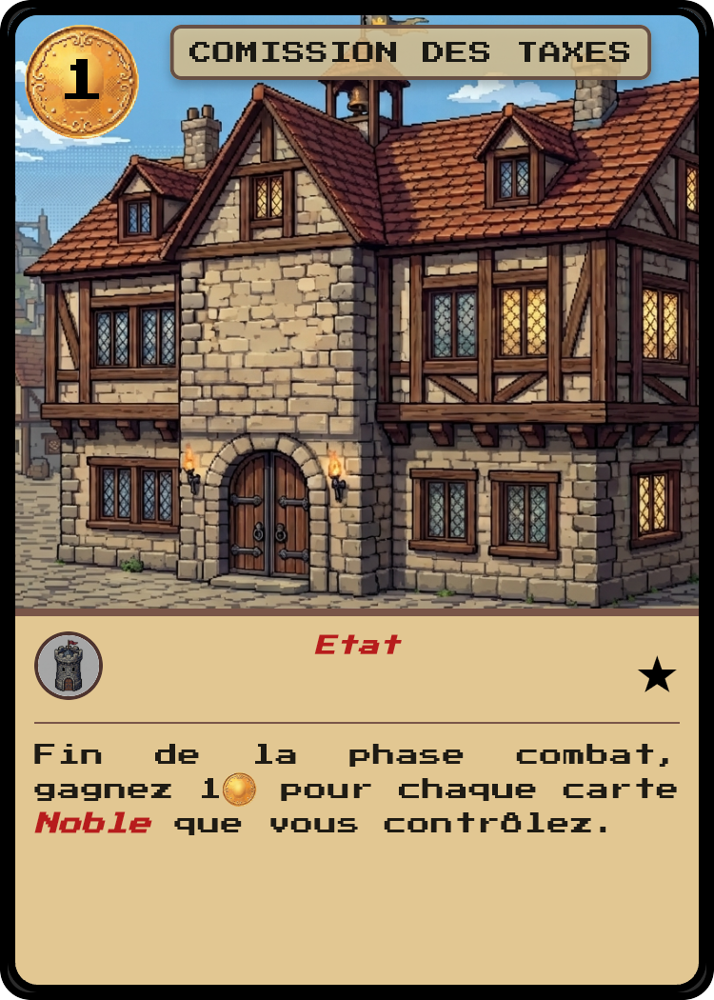
Exemple
Exemple d’un effet permanent : la carte « ★Phare » donne à vos lieux non ravagés sans boîte de texte imprimée un bonus permanent de +2 points de vie.
Exemple d’un effet qui est déclenché automatiquement : la carte « ★Commission des Taxes » se déclenche automatiquement à la fin de la phase d’Organisation, vous gagnez 1 OR par Noble que vous contrôlez.
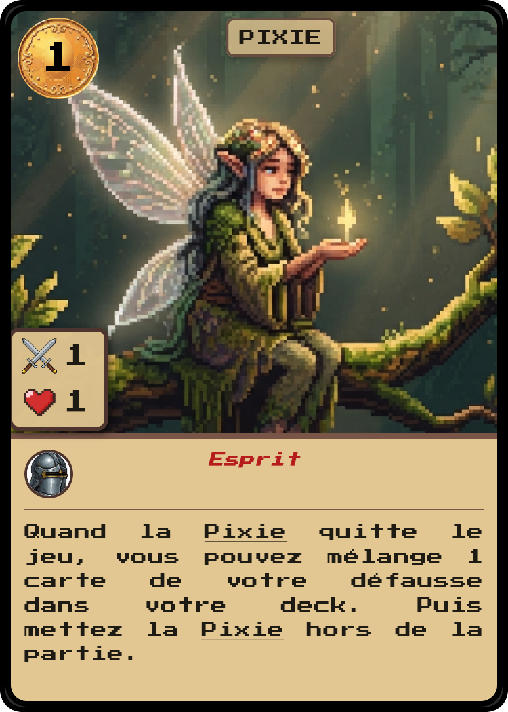
Exemple
La carte Pixie dit que quand elle quitte le jeu, le contrôleur peut mélanger une carte de sa défausse dans son deck et mettre la Pixie hors de la partie. Si la Pixie est tuée, elle ne va pas à la défausse, elle est mise hors de la partie après que le contrôleur a mélangé une carte de sa défausse dans son deck.
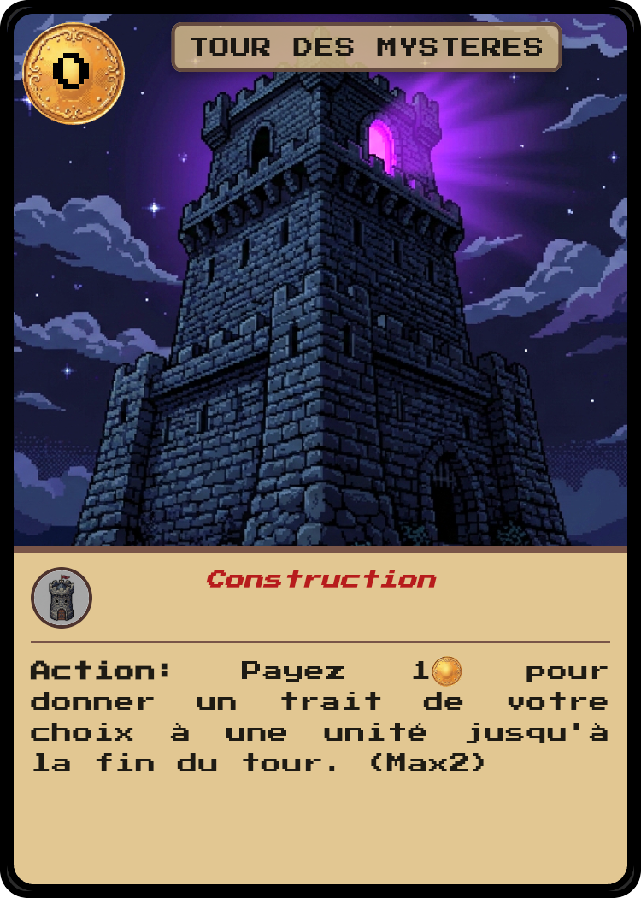
Exemple
Le bâtiment « La tour des Mystères » peut donner un trait (Max2), donc peut être déclenché au maximum 2 fois dans un même tour.
Aide de jeu
L’unité ne peut pas porter d’équipement. Si elle en a un et gagne ce mot-clé, l’équipement remonte en main ou est défaussé s’il est FRAGILE.
Ne subit que les dommages des cartes Magicien et les dommages de dette. Immunisée à POISON et MORTEL. Un MORTEL issu d’une carte Magicien est traité comme normal. Si le mot-clé est perdu, POISON et MORTEL s’appliquent normalement. Action : défausser une carte de sa main pour retirer ETHERE jusqu’à la fin de la phase.
Après la résolution, avant le retour à la citadelle : autant de dommages supplémentaires que de POISON subis. Pendant un combat, si une unité subit des dommages POISON (par exemple via « Duel »), l’effet s’applique immédiatement. POISON + MORTEL sur la même unité : le contrôleur choisit la nature des dommages infligés.
Après la résolution, avant le retour : l’unité est tuée (on met assez de dommages, puis elle quitte le jeu — sauf si elle ne peut pas être tuée : elle prend les dommages mais reste). Pendant le combat (ex. « Duel ») : immédiat. Une PUGNACE prend les dommages mais n’est tuée qu’en fin de phase (un soin entre-temps peut la sauver). MORTEL + POISON : le contrôleur choisit la nature.
Pendant la phase de combat, même tuée par un effet, par MORTEL, par trop de dommages ou par 0 PV, elle ne quitte le jeu qu’à la fin de la phase.
Ces dommages sont attribués avant les autres, par le joueur qui contrôle les cartes PRECIS.
Dans un combat avec d’autres unités, donne −1 force et −1 PV aux autres unités présentes.
Si la carte équipée quitte le jeu, ou si l’équipement n’est plus dans un emplacement valide (ou en est retiré par choix), il va à la défausse du propriétaire au lieu de remonter en main.
Ne compte pas dans la limite de quatre cartes jouées en phase d’organisation.
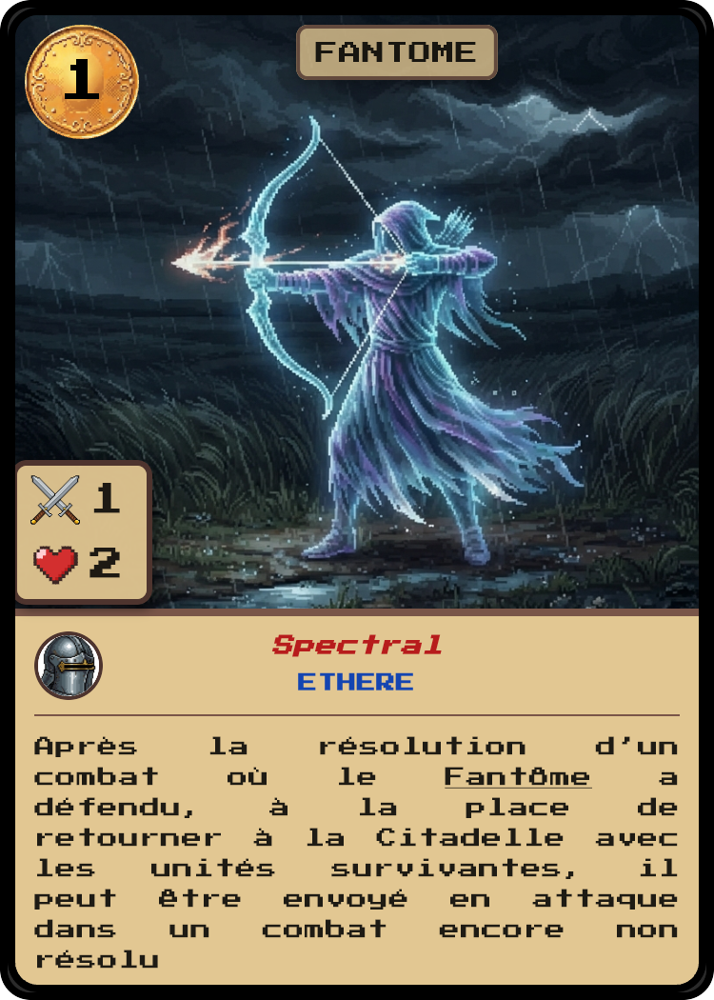
Exemple — ETHERE
La carte « Éclair » affecte une unité ETHERE parce que la carte « Éclair » possède le trait Magicien. Une unité ETHERE qui subit des dommages MORTEL d’une carte Magicien les considère comme normaux.
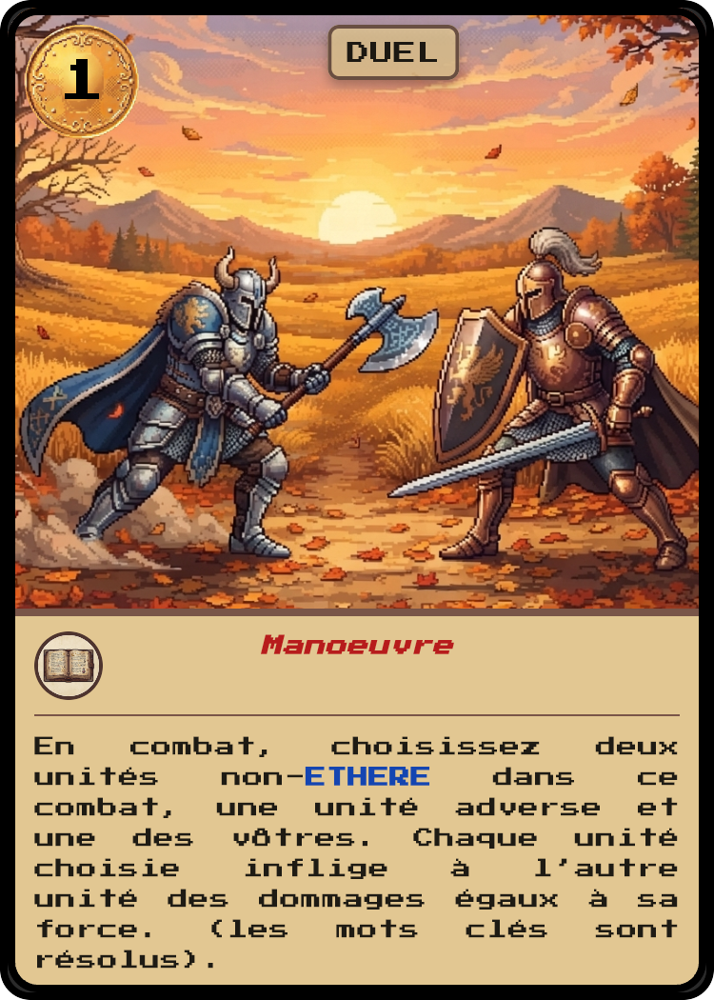
Exemple — POISON et MORTEL
Si une unité subit des dommages POISON pendant un combat (par exemple la carte « Duel »), on applique les effets du POISON immédiatement. Si une unité subit des dommages MORTEL pendant un combat (par exemple « Duel »), l’effet MORTEL est résolu immédiatement et non pas à la fin du combat. Si une unité a POISON et MORTEL en même temps, quand des dommages sont infligés par cette unité, le contrôleur décide de la nature de ces dommages.
Avant de jouer
Exactement 40 cartes. Au plus 2 exemplaires d’une même carte (donc au minimum 20 cartes différentes).
Exactement 7 cartes différentes.
1 QG exactement, et 2 non-QG différents (titres distincts).
Fin de partie
Dès qu’un joueur n’a plus de cartes dans son deck de jeu, la partie s’arrête : l’autre gagne.
Si les deux decks sont vides en même temps (par exemple en complétant la main en fin de tour) :